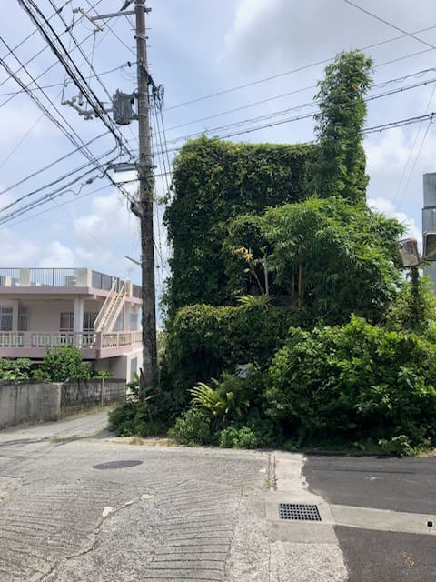
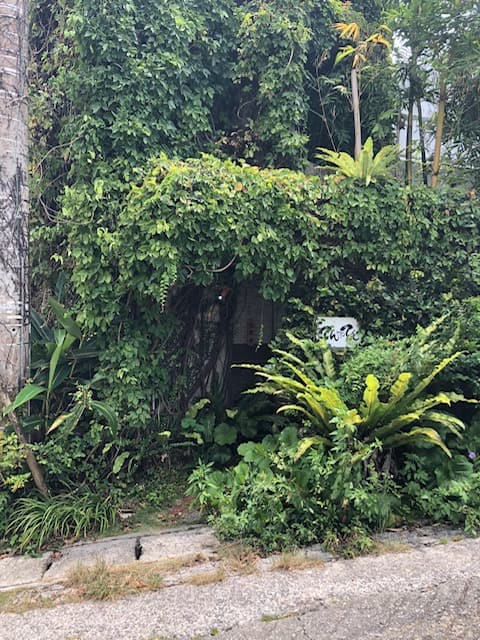
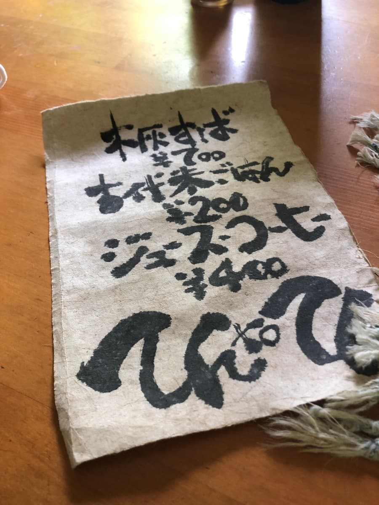
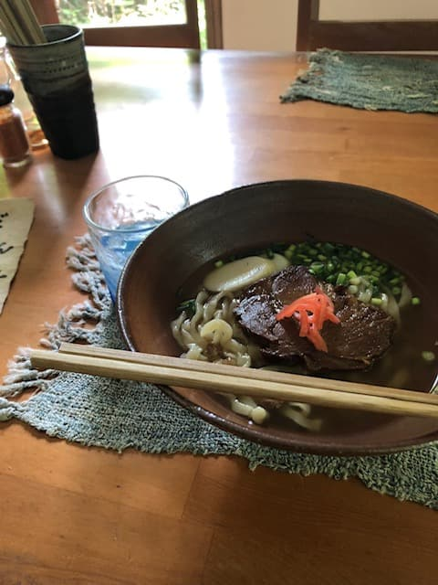

聽朋友說很好吃，2022年7月去吃的😄
有點迷路，在住宅區裡找到了店哈哈


靠著地圖App進了住宅區，一到就嚇了一跳(・・)
一邊想著哇這外觀真厲害，一邊以這天第1位客人的身分進了店。

只用「木灰麵」一種一決勝負呢。當然就點了木灰麵ｗｗ

喝一口湯。？？是柴魚基底的溫和味道，但我覺得味道非常淡。另外，木灰麵的麵條也沒有感覺到在其他店吃到的那種風味，感覺跟普通的麵一樣。
評分（8.5分/15分）：和很有看頭的外觀不同，麵本身整體味道偏淡，對我來說有點不夠。因為是這天第1位客人，是不是柴魚高湯還沒完全熬好呢？^^; 吃到一半加了島辣椒泡盛變換口味吃完的感覺。
麵：★★★☆☆（3）
湯頭：★★✬☆☆（2.5）
配料：★★★☆☆（3）